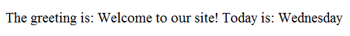
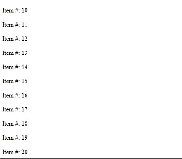

Orchard uses templates and shapes to build views. Templates are conceptually similar to partial views in ASP.NET MVC, and they provide the basic structure for rendering shape data in a page. A template can contain web page content such as HTML markup, CSS styles, and JavaScript code to help render shape data. In addition, a template can contain server-code blocks so that you can access and render shape data in a web page. Shapes are dynamic data models that represent content structures such as menus, menu items, content items, documents, and messages. Shapes provide the data for dynamic views (as opposed to the static ASP.NET views in MVC) that templates render at run time. For more information about working with shapes, see Accessing and Rendering Shapes.
Orchard使用模板和形状来构建视图。模板在概念上类似于ASP.NET MVC中的部分视图，它们提供了在页面中呈现形状数据的基本结构。模板可以包含网页内容，例如HTML标记，CSS样式和JavaScript代码，以帮助呈现形状数据。此外，模板可以包含服务器代码块，以便您可以访问和呈现网页中的形状数据。形状是动态数据模型，表示内容结构，如菜单，菜单项，内容项，文档和消息。 Shapes为运行时模板呈现的动态视图（与MVC中的静态ASP.NET视图相对）提供数据。有关使用形状的更多信息，请参阅[访问和渲染形状]（访问和渲染形状）。
The view engine is responsible for parsing the template and rendering the shape data into a web page. The default view engine for Orchard is the Razor view engine, which is installed with ASP.NET MVC 3. In order for the Razor view engine to correctly parse a template, you must write the template using the Razor syntax, which defines a small set of rules for writing web page templates that contain a mixture of static web page content (such as HTML markup) and programming code.
视图引擎负责解析模板并将形状数据呈现到网页中。 Orchard的默认视图引擎是Razor视图引擎，它与[ASP.NET MVC 3]（http://www.asp.net/mvc/mvc3）一起安装。为了让Razor视图引擎正确解析模板，您必须使用Razor语法编写模板，该语法定义了一小组用于编写包含静态网页内容（例如HTML标记）的网页模板的规则和编程代码。
This topic gives an overview of the Razor syntax used in templates and layout pages. It then shows you how to create your own shape template.
本主题概述了模板和布局页面中使用的Razor语法。然后，它会向您展示如何创建自己的形状模板。
Razor Syntax Primer
Razor Syntax Primer
Using the simple rules of the Razor syntax, you can embed server-based code (in C# or Visual Basic) into web page markup. Like server code in other ASP.NET web applications, the server code that you embed in a web page using the Razor syntax runs on the server before the page is sent to the browser. The server code in ASP.NET web pages can dynamically generate client content such as HTML markup, CSS, or JavaScript, and then send it to the browser along with any static HTML that the page contains.
使用Razor语法的简单规则，您可以将基于服务器的代码（在C＃或Visual Basic中）嵌入到网页标记中。与其他ASP.NET Web应用程序中的服务器代码一样，在将页面发送到浏览器之前，使用Razor语法嵌入网页的服务器代码在服务器上运行。 ASP.NET网页中的服务器代码可以动态生成客户端内容，如HTML标记，CSS或JavaScript，然后将其与页面包含的任何静态HTML一起发送到浏览器。
The most commonly used language for writing server code with the Razor syntax is C#, and the examples in this article are all written in C#. For an introduction to web page programming using the Razor syntax with C#, see Coding with the Razor Syntax. For a Visual Basic version of the introduction, see ASP.NET Web Pages Visual Basic.
使用Razor语法编写服务器代码的最常用语言是C＃，本文中的示例都是用C＃编写的。有关使用带有C＃的Razor语法进行网页编程的介绍，请参阅[使用Razor语法进行编码]（http://go.microsoft.com/fwlink/?LinkId=202890）。有关简介的Visual Basic版本，请参阅[ASP.NET网页Visual Basic]（http://go.microsoft.com/fwlink/?LinkId=202908）。
Web pages that contain Razor content have a special file extension (.cshtml for C#, .vbhtml for Visual Basic). The Microsoft feature name for these pages is ASP.NET Web Pages with Razor Syntax. These pages contain the full functionality of the ASP.NET MVC page framework, with the added capability of the Razor syntax for writing page templates. The server recognizes these file extensions, runs the code that's marked with Razor syntax, and sends the resulting page to the browser.
包含Razor内容的网页具有特殊的文件扩展名（C＃为_.cshtml_，Visual Basic为_.vbhtml_）。这些页面的Microsoft功能名称是带有Razor语法的ASP.NET网页。这些页面包含ASP.NET MVC页面框架的全部功能，并具有用于编写页面模板的Razor语法的附加功能。服务器识别这些文件扩展名，运行使用Razor语法标记的代码，并将生成的页面发送到浏览器。
Experimenting with Razor Syntax
尝试使用Razor语法
If you want to experiment with Razor syntax, you might want to start with WebMatrix. WebMatrix is a free programming environment for creating ASP.NET Web Pages with Razor syntax. It includes IIS Express (a development web server), ASP.NET, and SQL Server Compact (an embedded database also used by Orchard).
如果您想尝试使用Razor语法，可能需要从WebMatrix开始。 WebMatrix是一个免费的编程环境，用于使用Razor语法创建ASP.NET网页。它包括IIS Express（开发Web服务器），ASP.NET和SQL Server Compact（Orchard也使用的嵌入式数据库）。
WebMatrix gives you productivity features that support Razor syntax, such as syntax highlighting for code and IntelliSense for HTML markup and CSS. You can also work with Razor syntax in Visual Studio 2010, which provides the added features of full IntelliSense for your server code, and also lets you use the Visual Studio debugger. For more information, see Program ASP.NET Web Pages in Visual Studio. However, you can use any text editor to experiment with Razor syntax.
WebMatrix为您提供支持Razor语法的生产力功能，例如代码的语法突出显示和HTML标记和CSS的IntelliSense。您还可以在Visual Studio 2010中使用Razor语法，它为您的服务器代码提供了完整IntelliSense的附加功能，还允许您使用Visual Studio调试器。有关详细信息，请参阅[在Visual Studio中编写ASP.NET网页]（http://go.microsoft.com/fwlink/?LinkId=205854）。但是，您可以使用任何文本编辑器来试验Razor语法。
To download and install WebMatrix, go to the WebMatrix downloads page and click the link for the Microsoft Web Platform Installer to start your download.
要下载并安装WebMatrix，请转到[WebMatrix下载页面]（http://www.microsoft.com/web/downloads/），然后单击Microsoft Web Platform Installer的链接开始下载。
Code Blocks and Inline Expressions
代码块和内联表达式
You add code to a web page using the @ character. Braces ({ }) are used to mark a code block. For example, the following expression assigns the string "Hello World" to a variable named myMessage.
使用@字符将代码添加到网页。大括号（{}）用于标记代码块。例如，以下表达式将字符串“Hello World”分配给名为myMessage的变量。
@{ var myMessage = "Hello World"; }
Code blocks can be inserted in the web page interspersed with HTML markup. The following code defines a greeting message that includes the current day of the week and embeds the message in the page markup.
可以在填充HTML标记的网页中插入代码块。以下代码定义了一个包含当前星期几的问候消息，并将消息嵌入到页面标记中。
@{
var greeting = "Welcome to our site!";
var weekDay = DateTime.Now.DayOfWeek;
var greetingMessage = greeting + " Today is: " + weekDay;
}
<p>The greeting is: @greetingMessage</p>

When the code block consists of a single expression, such as a for loop, you can place the @ character in front of a language keyword. In this case, the for loop serves as the entire code block, so you do not need an outer @ character and braces to enclose the block. You can use the same approach with other block coding structures in C#: if-then statements, foreach and while loops, case statements, and so on. In the following expression, the @ character is placed in front of the keyword for. The loop prints a set of numbered lines from 10 to 20.
当代码块由单个表达式组成时，例如for循环，您可以将@字符放在语言关键字前面。在这种情况下，for循环用作整个代码块，因此您不需要外部的@字符和大括号来封闭块。您可以在C＃中使用与其他块编码结构相同的方法：if-then语句，foreach和while循环，case语句等等。在下面的表达式中，@字符放在关键字for的前面。循环打印一组从10到20的编号行。
@for(var i = 10; i < 21; i++)
{
<p>Line #: @i</p>
}

The following example shows how to embed server-side comments in your web pages. These comments are stripped from the markup before the web page is sent to the browser, so users cannot see them. In contrast, client markup comments (<!-- -->) are not stripped from the markup, so users can see them.
以下示例显示如何在网页中嵌入服务器端注释。在将网页发送到浏览器之前，这些注释会从标记中删除，因此用户无法看到它们。相反，客户端标记注释（<！ - - >）不会从标记中剥离，因此用户可以看到它们。
@* This is a one-line comment. *@
@*
This is a multi-line comment.
It can continue for any number of lines.
*@
Comments within a Razor syntax code block can also use the standard C# commenting syntax (//).
Razor语法代码块中的注释也可以使用标准的C＃注释语法（//）。
Accessing Orchard Objects in Code
在代码中访问Orchard对象
Orchard 1.1 provides simplified access to objects in code, because you can directly access content part objects without having to use casting or extension methods.
Orchard 1.1提供了对代码中对象的简化访问，因为您可以直接访问内容部件对象，而无需使用强制转换或扩展方法。
The following examples show how to access a Title property on a widget part. The first code example shows the older way of access the property from Orchard version 1.0.20, found in the ~\Modules\Orchard.Widgets\Views\Widget.Wrapper.cshtml file. Note that the code casts the returned object to the IContent interface and uses an As extension method to access the property.
以下示例显示如何访问小部件部件上的“Title”属性。第一个代码示例显示了从Orchard版本1.0.20访问该属性的旧方法，该方法位于_~ \ Modules \ Orchard.Widgets \ Views \ Widget.Wrapper.cshtml_文件中。请注意，代码将返回的对象强制转换为IContent接口，并使用As扩展方法来访问该属性。
var title = ((IContent)Model.ContentItem).As<WidgetPart>().Title;
Here is the updated and simplified way that you can access the property in Orchard 1.1:
以下是您可以访问Orchard 1.1中的属性的更新和简化方法：
var title = Model.ContentItem.WidgetPart.Title;
Here is a second example of Orchard object access that has been simplified in version 1.1. The following code is in Orchard version 1.0.02 to access the fields for a content item. This example is from a content shape, so the ContentItem object is accessed directly on the Model object. The first line of code casts to ContentItem, and then the second line uses an As() extension method to access the collection of fields on the content part. The return value of the code is the picture width.
以下是在1.1版中简化的Orchard对象访问的第二个示例。以下代码在Orchard版本1.0.02中访问内容项的字段。此示例来自内容形状，因此ContentItem对象直接在Model对象上访问。第一行代码转换为ContentItem，然后第二行使用As（）扩展方法来访问内容部分的字段集合。代码的返回值是图片宽度。
var contentItem = (ContentItem)Model.ContentItem;
var picture = (ImageField)contentItem.As<ProfilePart>().Fields.First(f => f.Name == "Picture");
@picture.Width
Here is an approach you can use in Orchard 1.1, with the amount of code required to get the picture width reduced from three lines to just one:
这是一种可以在Orchard 1.1中使用的方法，其中将图片宽度从三行减少到一行所需的代码量：
@Model.ContentItem.ProfilePart.Picture.Width
Creating Shape Templates
创建形状模板
Shape templates are fragments of HTML markup for rendering shapes. To demonstrate how shape templates are used, suppose you want display a map on your web page. The shapes that will contain the map settings for display and edit are defined in the following driver code.
形状模板是用于渲染形状的HTML标记的片段。要演示如何使用形状模板，假设您要在网页上显示地图。包含用于显示和编辑的地图设置的形状在以下驱动程序代码中定义。
using Maps.Models;
using Orchard.ContentManagement;
using Orchard.ContentManagement.Drivers;
namespace Maps.Drivers
{
public class MapPartDriver : ContentPartDriver<MapPart>
{
protected override DriverResult Display(
MapPart part, string displayType, dynamic shapeHelper)
{
return ContentShape("Parts_Map",
() => shapeHelper.Parts_Map(
Longitude: part.Longitude,
Latitude: part.Latitude));
}
//GET
protected override DriverResult Editor(
MapPart part, dynamic shapeHelper)
{
return ContentShape("Parts_Map_Edit",
() => shapeHelper.EditorTemplate(
TemplateName: "Parts/Map",
Model: part));
}
//POST
protected override DriverResult Editor(
MapPart part, IUpdateModel updater, dynamic shapeHelper)
{
updater.TryUpdateModel(part, Prefix, null, null);
return Editor(part, shapeHelper);
}
}
}
The Display method is used to display the map. The Editor method marked //GET is used to display the shape result in editing view for user input. The Editor method marked //POST is used to redisplay the editor view using the values provided by the user. These methods use different overloads of the Editor method.
Display方法用于显示地图。标有// GET的Editor方法用于在编辑视图中显示用户输入的形状结果。标有// POST的Editor方法用于使用用户提供的值重新显示编辑器视图。这些方法使用Editor方法的不同重载。
For more information about how to define shapes, see Accessing and Rendering Shapes.
有关如何定义形状的更多信息，请参阅[访问和渲染形状]（访问和渲染形状）。
The following example shows a simple template that is used to display the map.
以下示例显示了用于显示地图的简单模板。
<img alt="Location" border="1" src="http://maps.google.com/maps/api/staticmap?
&zoom=14
&size=256x256
&maptype=satellite&markers=color:blue|@Model.Latitude,@Model.Longitude
&sensor=false" />
This example shows an img element in which the src attribute contains a URL and a set of parameters passed as query-string values. In this query string, @Model represents the shape that was passed into the template. Therefore, @Model.Latitude is the Latitude property of the shape, and @Model.Longitude is the Longitude property of the shape.
这个例子显示了一个img元素，其中src属性包含一个URL和一组作为查询字符串值传递的参数。在此查询字符串中，“@ Model”表示传递给模板的形状。因此，@ Model.Latitude是形状的'Latitude属性，@ Model.Longitude是形状的Longitude`属性。
The following example shows the template for the editor. This template enables the user to enter values for latitude and longitude.
以下示例显示了编辑器的模板。此模板允许用户输入纬度和经度值。
@model Maps.Models.MapPart
<fieldset>
<legend>Map Fields</legend>
<div class="editor-label">
@Html.LabelFor(model => model.Longitude)
</div>
<div class="editor-field">
@Html.TextBoxFor(model => model.Latitude)
@Html.ValidationMessageFor(model => model.Latitude)
</div>
<div class="editor-label">
@Html.LabelFor(model => model.Longitude)
</div>
<div class="editor-field">
@Html.TextBoxFor(model => model.Longitude)
@Html.ValidationMessageFor(model => model.Longitude)
</div>
</fieldset>
The @Html.LabelFor expressions create labels using the name of the shape properties. The @Html.TextBoxFor expressions create text boxes where users enter values for the shape properties. The @Html.ValidationMessageFor expressions create messages that are displayed if users enter an invalid value.
@Html.LabelFor表达式使用形状属性的名称创建标签。 @Html.TextBoxFor表达式创建文本框，用户可在其中输入形状属性的值。 @ Html.ValidationMessageFor表达式创建在用户输入无效值时显示的消息。
Layout and Document Templates
布局和文档模板
The layout and document templates are special template types that define the structure of a web page. These templates are most often used in themes for laying out a web page. Each web page has a Layout shape (dynamic object) associated with it. The Layout shape defines the zones that are available to hold web page contents. The layout and document templates determine how the zones defined in the Layout shape will be laid out on the web page.
布局和文档模板是定义网页结构的特殊模板类型。这些模板最常用于布局网页的主题中。每个网页都有一个与其关联的“布局”形状（动态对象）。 Layout形状定义了可用于保存网页内容的区域。布局和文档模板确定如何在“布局”形状中定义的区域将在网页上布局。
The layout template (Layout.cshtml) lays out the zones for the body of the web page. The document template (Document.cshtml) wraps around the layout template and lays out the remainder of the web page.
布局模板（Layout.cshtml）列出了网页正文的区域。文档模板（Document.cshtml）包装布局模板并布置网页的其余部分。
By default, the Layout shape defines three zones for use in the document template (Head, Body, and Tail) and one shape for the layout template (Content). In the document template, the Head zone is used to define the header of the web page, the Body zone is where the layout template is inserted, and the Tail zone is used for the footer of the web page.
默认情况下，Layout形状定义了三个区域，用于文档模板（Head，Body和Tail）和一个用于布局模板的形状（Content）。在文档模板中，Head区域用于定义网页的标题，Body区域是插入布局模板的位置，Tail区域用于网页的页脚。
The following example shows a typical document template.
以下示例显示了典型的文档模板。
@using Orchard.Mvc.Html;
@using Orchard.UI.Resources;
@{
RegisterLink(new LinkEntry {Type = "image/x-icon", Rel = "shortcut icon",
Href = Url.Content("~/modules/orchard.themes/Content/orchard.ico")});
Script.Include("html5.js").AtLocation(ResourceLocation.Head);
var title = (Request.Path != Request.ApplicationPath && !string.IsNullOrWhiteSpace((string)Model.Title)
? Model.Title + WorkContext.CurrentSite.PageTitleSeparator
: "") +
WorkContext.CurrentSite.SiteName;
}
<!DOCTYPE html>
<html lang="en" class="static @Html.ClassForPage()">
<head>
<meta charset="utf-8" />
<title>@title</title>
@Display(Model.Head)
< script>(function(d){d.className="dyn"+d.className.substring(6,d.className.length);})(document.documentElement);</script>
</head>
<body>
@* Layout (template) is in the Body zone at the default position *@
@Display(Model.Body)
@Display(Model.Tail)
</body>
</html>
This document template contains a code block that links to an icon and formats the page title. It also contains the basic HTML structure for the web page, and it determines placement of the Head, Body, and Tail zones.
此文档模板包含一个代码块，该代码块链接到图标并格式化页面标题。它还包含网页的基本HTML结构，它确定了“Head”，“Body”和“Tail”区域的位置。
The following example shows a typical layout template. Notice that the layout template references zones in addition to the Content zone. These new zones are added to the Layout shape if content is added to the zone.
以下示例显示了典型的布局模板。请注意，除了“Content”区域之外，布局模板还引用了区域。如果将内容添加到区域，则会将这些新区域添加到“布局”形状中。
@* Html.RegisterStyle("site.css"); *@
@{
Model.Header.Add(Display.Header(), "5");
Model.Header.Add(Display.User(), "10");
Model.Header.Add(Model.Navigation, "15");
}
<div id="page">
<header>
@Display(Model.Header)
</header>
<div id="main">
<div id="messages">
@Display(Model.Messages)
</div>
<div id="content-wrapper">
<div id="content">
@Display(Model.Content)
</div>
</div>
<div id="sidebar-wrapper">
<div id="sidebar">
@Display(Model.Sidebar)
</div>
</div>
</div>
<div id="footer-wrapper">
<footer>
@Display(Model.Footer)
</footer>
</div>
</div>
This layout template contains a code block that adds subzones to the Header zone. It also refers to the following new zones: Messages, Sidebar, and Footer.
此布局模板包含一个代码块，用于将子区域添加到“标题”区域。它还引用了以下新区域：Messages，Sidebar和Footer。
In order for these zones to appear in the Orchard UI so you can add content to them, you must reference the zones in the theme's Theme.txt file, as shown in the following example.
为了使这些区域出现在Orchard UI中以便您可以向它们添加内容，您必须引用主题的_Theme.txt_文件中的区域，如以下示例所示。
Name: SimpleTheme
Author:
Description: Simple example theme.
Version: 1.0
Tags: Simple
Website: http://www.orchardproject.net
Zones: Header, User, Navigation, Messages, Content, Sidebar, Footer
Change History
改变历史
-
Updates for Orchard 1.1
-
Orchard 1.1的更新 *
- 4-4-11: Updated introduction to the Razor syntax. Added new section on accessing Orchard objects in code.